S
quares and
11 Right Triangles
Areas of squares
What is the area of a square with lengths of sides 3metres?
3 × 3 = 9 square metres, isn’t it?
What if the lengths of sides is 1 12 metres?
1
1
3
3
12 × 12 = 2 × 2
= 94
= 2 14
The area is 2 14 square metres.
What about a square of sides 1.2 metres?
12
1.2 × 1.2 = 12
10 × 10
= 144
100
= 1.44
The area is 1.44 square metres.
In all these calculations, we multiplied a number by itself. In other words, we
2
computed the second powers, 32, c1 12 m , (1.2)2.
The second power of a number is called the square of that number. And the operation
of finding the square of a number is called squaring.
147
Standard - VII
147
Page 44
Mathematics
For example,
3 × 3 = 32
Square of 3 (or 3 squared)
1
1
1 2
1 2 × 1 2 = c1 2 m
Square of 1 12 (or 1 12 squared)
1.2 × 1.2 = (1.2)2
Square of 1.2 (or 1.2 squared)
So, we can say that the area of a (geometrical) square is the (arithmetical) square of
its side.
Now a question in the other direction:
To draw a square of area 25 square centimetres, what should be the length of
the sides?
The area is the square of the length of the side. So, the question is
The square of which number is 25?
In more detail,
Which number multiplied by itself gives 25?
A little thought gives 5 × 5 = 25; so the length of side should be 5 centimetres.
Here we got 5 as the answer to the question, which number squared gives 25. This
we can say in another way
5 is the square root of 25.
The shorthand notation for the statement, “5 squared is 25” is
52 = 25
The reverse statement is, “5 is the square root of 25”. We use the symbol
this in shorthand; that is,
to write
25 = 5
We can now write all our earlier computations in reverse:
9 = 3 × 3 = 32
1
1
1
1 2
2 4 = 1 2 × 1 2 = c1 2 m
Square of 3 is 9
9 =3
Square root of 9 is 3
Square of 1 12 is 2 14
1
1
1
1
2 4 = 1 2 Square root of 2 4 is 1 2
1.44 = 1.2 × 1.2= (1.2)2 Square of 1.2 is 1.44
1.44 = 1.2 Square root of 1.44 is 1.2
148
Standard - VII
148
Page 45
Squares and Right Triangles
It is not easy to compute the square roots of numbers. For small natural numbers, we
can check the squares one by one and find the square root. For slightly larger natural
numbers, we can try to factorize them and compute the square root. For example,
look at this problem:
What is the length of the side of a square of area 196 square metres?
We can factorize 196 and write
196 = 2 × 2 × 7 × 7 = 22 × 72
We have seen in the lesson, Repeated Multiplication that product of powers is the
power of the product (xnyn = (xy)n)
So,
196 = 22 × 72 = (2 × 7)2 = 142
Writing this in reverse, we have
196 = 14
So, the side of the square is 14 metres.
Using this we can also do this problem:
What is the length of the side of a square of area 1.96 square metres?
14
2
c 14 m
1.96 = 196
100 = 102 = 10 = (1.4)
2
2
Writing this in reverse, 1.96 = 1.4
So, the length of the side is 1.4 metres
Now compute the lengths of the sides of squares with area given below.
Write the answers using square roots
49 square centimetres
(ii) 169 square centimetres
(iii) 400 square centimetres
(iv) 225 square centimetres
(v) 1.69 square centimetres
(vi) 6 14 square metres
(i)
149
Standard - VII
149
Page 46
Figure fig_ch04_p046_01 (Page 46)
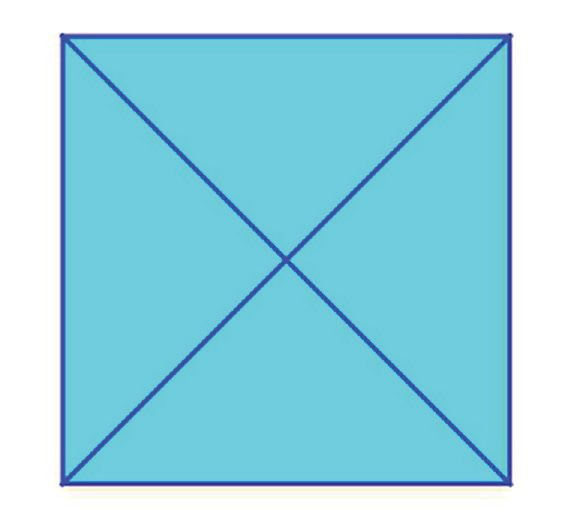
Figure fig_ch04_p046_02 (Page 46)
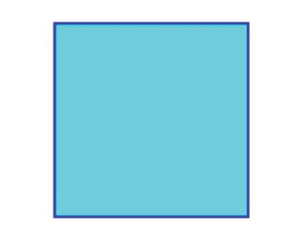
Figure fig_ch04_p046_03 (Page 46)
Mathematics
Doubling the area
Cut out a square from thick sheet of paper:
How do you make a square of double the area?
If we measure the length of a side of this square, we can calculate its area as the
square of this number; if we double this number and calculate its square root, we get
the side of the square of double the area.
There’s way to make such a square without any measurement or computation. For
that, first cut out another square of the same size. (Remember we have to double the
area). Cut both squares along their diagonals:
Now arrange the four triangles as below:
We used all the pieces of the two small squares to make this large square. So, its area
is double that of a small square.
There’s another way of seeing this. Each of the small squares is made up of two right
triangles of the same size; the large square is made up of four such right triangles.
Is the side of the large square equal to the length of some line related to a small
square?
So if we want to just draw a square with double the area of another, we need just draw
the square with the diagonal as side:
In GeoGebra, we can draw a square using the
Regular Polygon tool, by clicking on
two points and giving the number of
sides as 4. Draw a square ABCD like this. Draw
the square on a diagonal (Select the Regular
Polygon tool and click on D and B) Select the
Area tool and click inside each square to get
their areas. What is the relation between the
areas? Drag B to change the first square and see
If we want to see the squares separately, we
just need to one side of the original square and mark the length of the diagonal on it:
151
Standard - VII
151
Page 48
Figure fig_ch04_p048_01 (Page 48)
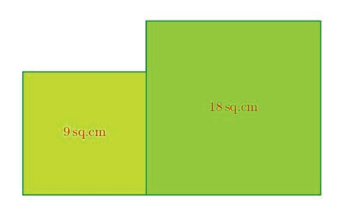
Figure fig_ch04_p048_02 (Page 48)
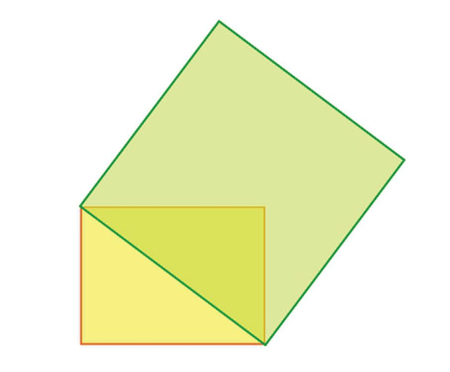
Figure fig_ch04_p048_03 (Page 48)
Mathematics
Now can’t you draw squares of areas as below:
(i) 32 sq.cm
(ii) 50 sq.cm
(iii) 12.5 sq.cm
(iv) 24 12 sq.cm
Rectangles and squares
We saw that the area of the square on the diagonal of a square is doubled.
What if we draw the square on the diagonal of a rectangle with unequal sides?
The area of this square also depends on the squares on the sides:
To understand this, draw a rectangle, and squares on its sides and a diagonal as in the
picture above, on a thick sheet of paper.
Before cutting it out, we have to draw some more lines. First draw the diagonals of
the bottom square and mark the point where they intersect. Then erase the diagonals
and draw lines through the point marked, lines parallel to the sides of the largest
square:
Now cut out the squares; also cut the blue square along the lines drawn inside it:
Arrange the pieces of the blue square and the whole red square within the green
square as shown below:
Draw a rectangle in GeoGebra (This
can be done easily sing the Grid
option.) Use the Regular Polygon
tool to draw squares on two adjacent sides
and a diagonal. Use the Area tool to get
their areas. What is the relation between the
areas? Change the lengths of the sides of the
rectangle and check
Try this by cutting out different rectangles and squares on their sides and diagonals.
Can’t the square on the diagonal be exactly filled with squares on the sides?
So, what can we say in general about the areas of these three squares?
The area of the square on the diagonal of a rectangle is equal to the sum of the areas
of the squares on the adjacent sides
This can be stated in a different way.
In any rectangle, two sides and a diagonal make a right triangle. The adjacent sides
of the rectangle are the perpendicular sides of the triangle; and the diagonal is the
longest side of the right triangle.
The longest side of a right triangle is called its hypotenuse. So the above result can
also be stated as below:
The area of the square on the hypotenuse of a right triangle is equal to the sum of the
areas of the squares on the perpendicular sides
For example, if the sides of a rectangle are 5 centimetres and 3 centimetres, then
the areas of the squares on them are 52 = 25 square centimetres and 32 = 9 square
centimetres. So, the area of square on the diagonal is 25 + 9 = 34 square centimetres:
In GeoGebra, create an integer slider n
with minimum value 3. For this, select
the Slider tool and click on the screen; in the
dialog window, select the option Integer.
enter 3 as Min and click OK. Now draw a right
triangle. select the Regular Polygon tool and
click on two vertices. In the dialog window,
enter n as Vertices. In this way, we can draw
regular n-gons on all three sides of the triangle
(equilateral triangle for n = 3, square for n =
4 and so on). Use the Area tool to get their
areas. What is the relation between the areas?
Change the lengths of the sides of the triangle
and the number of sides of the polygons and
check
This result is known as the Pythagoras’ Theorem, named for the mathematician
Pythagoras, who lived in ancient Greece.
We can use this to draw squares of specified areas. For example, to draw a square of
area 10 square centimetres, we first split 10 as
10 = 1 + 9 = 12 + 32
This shows that 10 square centimetres is the sum of the areas of a square of side 1
centimetre and a square of side 3 centimetres. So, by Pythagoras’ Theorem, if we
155
Standard - VII
155
Page 52
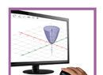
Figure fig_ch04_p052_01 (Page 52)
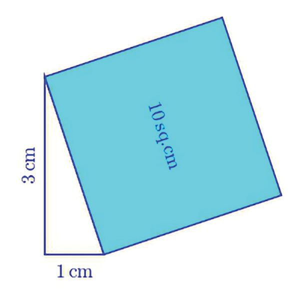
Figure fig_ch04_p052_02 (Page 52)
Mathematics
draw a right triangle with perpendicular sides 1 and 3 centimetres, then the area of
the square on the hypotenuse is 10 square centimetres.
Draw squares of areas below in
GeoGebra:
(i) 13 (ii) 20 (iii) 26
Check whether the constructions are correct,
using the Area tool
What about a square of area 11 square centimetres?
11 cannot be written as the sum of squares of two natural numbers (check!) so we
cannot use the above method to draw such a square.
We can think in a different way. According to Pythagoras’ Theorem, if from the area
of the square on the hypotenuse of a right triangle, we subtract the area of the square
on another side, then we get the area of the square on the third side, right?
So, to draw a square of area 11 square centimetres, it is enough to split 11 as the
difference of two squares.
A little bit of thinking gives
11 = 36 − 25 = 62 − 52
So, if we draw a right triangle of hypotenuse 6 centimetres and another side of
5 centimetres, then the area of the square on the third side would be 11 square
centimetres:
156
Standard - VII
156
Page 53
Figure fig_ch04_p053_01 (Page 53)
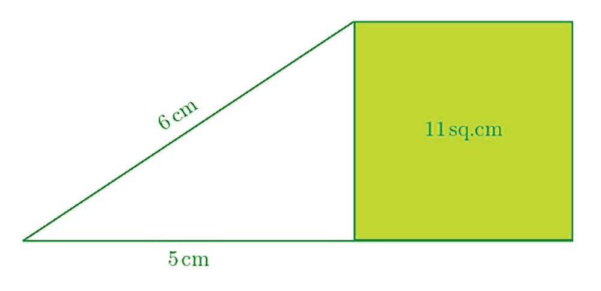
Figure fig_ch04_p053_02 (Page 53)
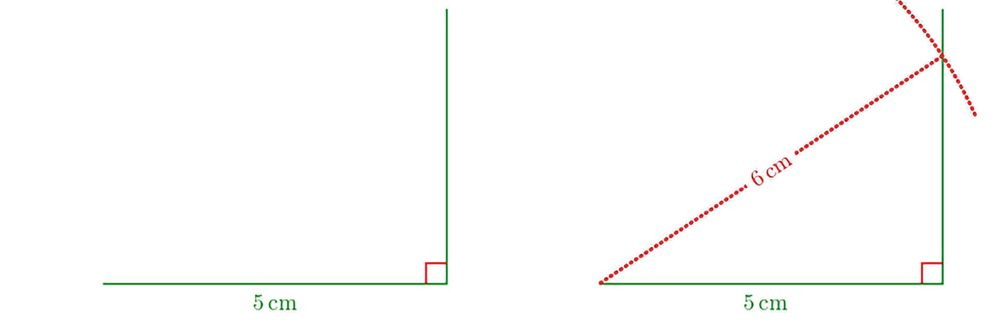
Figure fig_ch04_p053_03 (Page 53)
Squares and Right Triangles
But how do we actually draw such a triangle?
Draw a line 5 centimetres long and the perpendicular at one end. Next draw a piece
of the circle centred at the other end of the line, with radius 6 centimetres. The point
where this circle meets the perpendicular is the third vertex of the triangle we want:
Now try these problems:
(1) Draw squares of areas given below
(i) 17 square centimetres
(ii) 18 square centimetres
(iii) 19 square centimetres
157
Standard - VII
157
Page 54
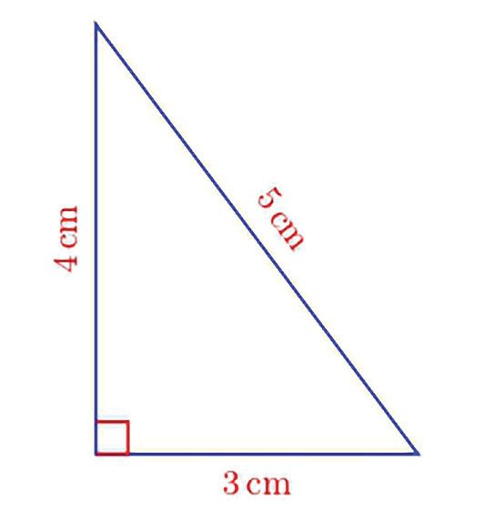
Figure fig_ch04_p054_01 (Page 54)
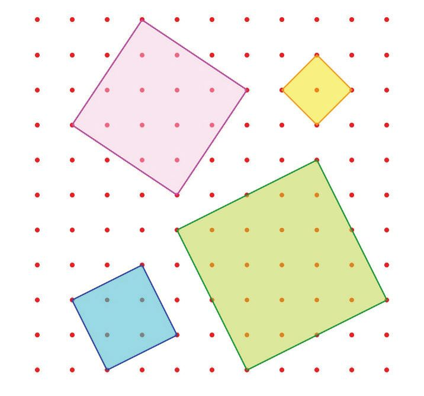
Figure fig_ch04_p054_02 (Page 54)
Mathematics
(2) In the picture below, dots are marked 1 centimetre apart, horizontally and
vertically and some of these are joined to make squares:
Calculate their areas.
Line math
Pythagoras’ Theorem states a relation between the areas of squares on the sides of a
right triangle,
The area of a square is the square of the length of its side; so, Pythagoras’ Theorem
can also be stated as a relation between the sides of a right triangle:
The square of the hypotenuse of a right triangle is the sum of the squares of its
perpendicular sides
For example, if the perpendicular sides of a right triangle are
3 centimetres and 4 centimetres, then the square of its
hypotenuse is
32 + 42 = 25
So, the hypotenuse of this triangle is 5 centimetres
158
Standard - VII
158
Page 55
Figure fig_ch04_p055_01 (Page 55)
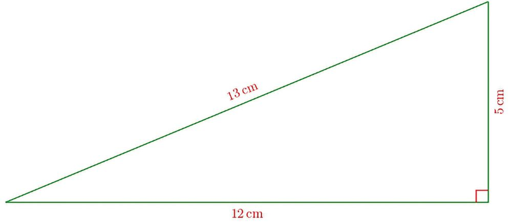
Figure fig_ch04_p055_02 (Page 55)
Squares and Right Triangles
Another question:
The hypotenuse of a right triangle is 14 centimetres and the length of another
side is 12 centimetres. What is the length of the third side?
The square of the third side added to the square of its perpendicular side, which is
12, is the square of the hypotenuse, which is 13. So,
Square of the third side = 132 − 122 = 169 − 144 = 25.
This gives the length of the third side as 5 centimetres.
Now try these problems
(1) The lengths of two sides of some right triangles are given below. Calculate the
length of the third side.
(i) Perpendicular sides 6 centimetres, 8 centimetres
(ii) Perpendicular sides 9 centimetres, 12 centimetres
(iii) Perpendicular sides 7 centimetres, 24 centimetres
(iv) Perpendicular sides 14 centimetres, 48 centimetres
(v) Hypotenuse 17 centimetres, another side 15 centimetres
(vi) Hypotenuse 34 centimetres, another side 30 centimetres
159
Standard - VII
159
Page 56
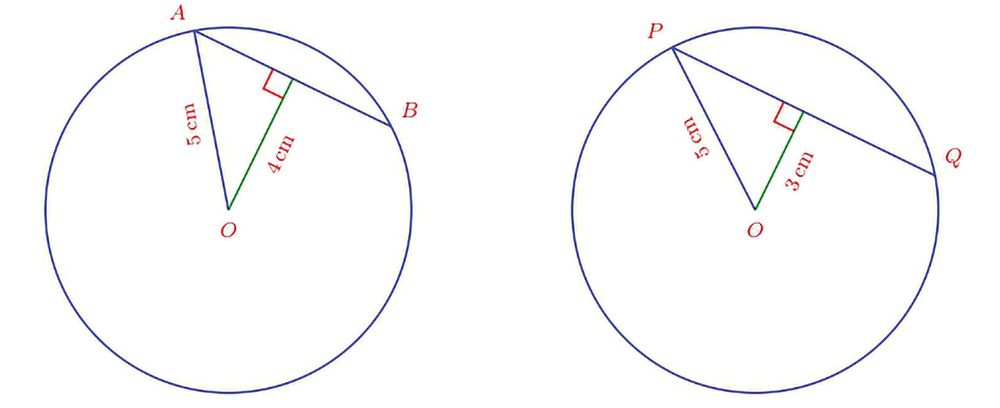
Figure fig_ch04_p056_01 (Page 56)
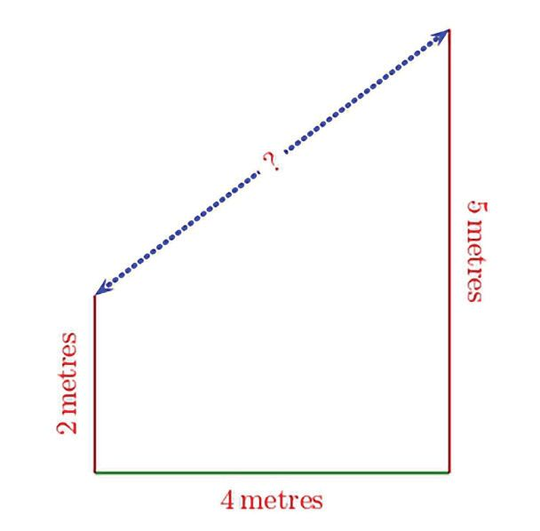
Figure fig_ch04_p056_02 (Page 56)
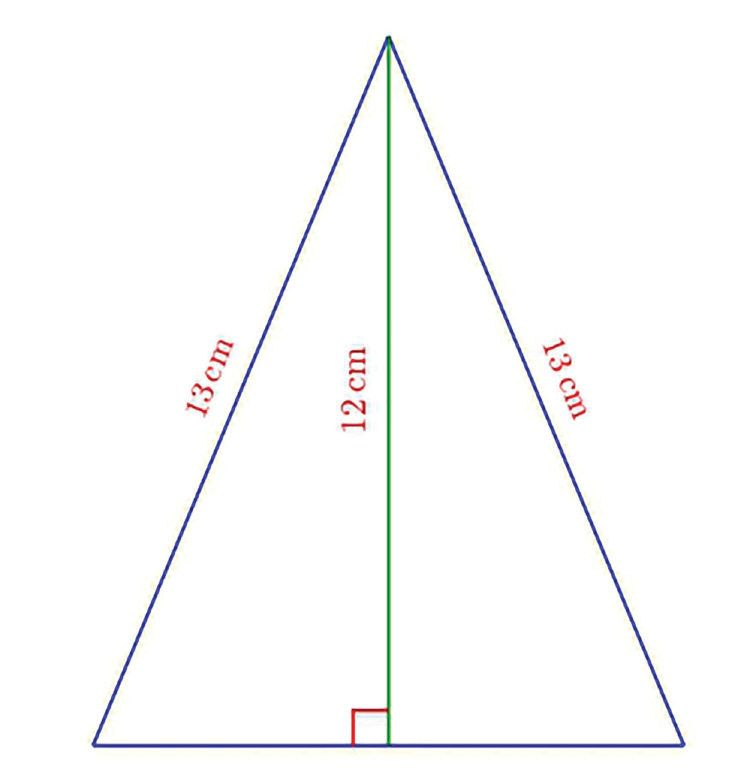
Figure fig_ch04_p056_03 (Page 56)
Mathematics
(2) Two pillars of heights 2 metres and 5 metres stand 4 metres apart:
What is the distance between their tops?
(3) Find the length of the bottom side of the triangle drawn below:
(4) In the pictures below, O is the centre of the circle and A, B, P, Q are points on the
circle: